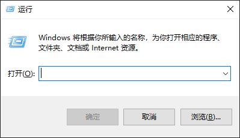
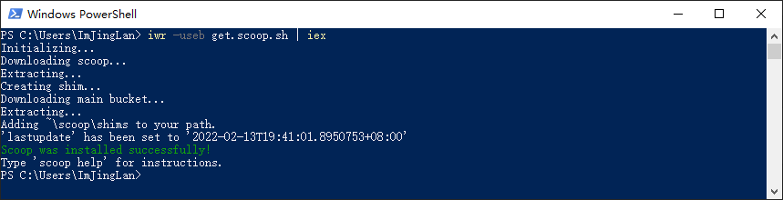

Scoop 安装
Scoop 是什么¶
Scoop 是一款在 Windows 上的包管理器
Q：什么是包管理器？¶
A：简单来说，“包管理器”（或“软件包管理器”）是一种工具，它允许用户在操作系统上安装、删除、升级、配置和管理软件包。软件包管理器可以是像“软件中心”这样的图形化应用，也可以是像 apt-get 或 pacman 这样的命令行工具。
Q:为什么选择 Scoop（Scoop 有什么优点）¶
-
仍在维护
-
不依赖管理员权限
-
防止安装大量程序造成的 PATH 污染
-
避免了安装和卸载程序的意外副作用
-
自动查找和安装依赖项
-
自己执行所有额外的安装步骤，以获得一个工作程序
安装 scoop¶
win + r 打开运行窗口

输入Powershell
在打开的窗口中输入
iwr -useb get.scoop.sh | iex
或者
Invoke-Expression (New-Object System.Net.WebClient).DownloadString('https://get.scoop.sh')
如果您收到错误，您可能需要更改执行策略（即启用 Powershell）
Set-ExecutionPolicy RemoteSigned -scope CurrentUser
当 Powershell 显示"Scoop was installed successfully!"时，即代表你的 scoop 已安装完成
